После Preview 8
Атаки, разлом и дух
Общие изменения
Освещение и интерфейс
- Предупреждение — Перед обороной фонари мерцают с разным ритмом.
- Затемнение депо — После предупреждения темнота плавно усиливается по мере удаления от светоча.
- Уровень затемнения видят и клиенты LAN.
Освещение депо
По мере потери здоровья светоч тускнеет, а складки вращающейся вуали становятся реже.

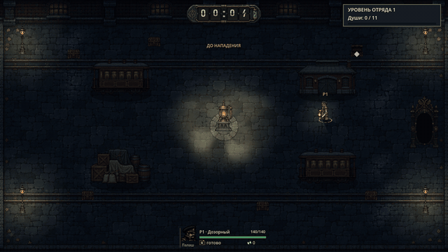
Герои
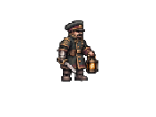
Дозорный
- Попадание взмахом Дозорного считается от его текущей позиции.
- Отступление уводит зону удара, а сближение позволяет достать врага.
- Дальность остаётся 70 пикс.
- След палаша — На ходу следует за текущей позой и положением Дозорного, в том числе в LAN.

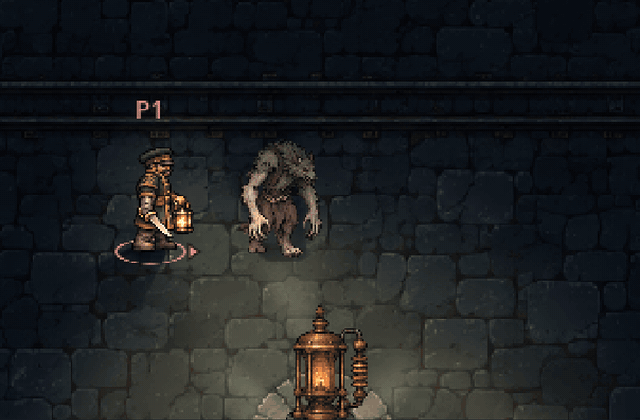
Нечисть и боссы
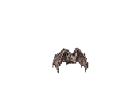
Летучая мышь
Рывок
- Скорость рывка — 270 → 400 пикс/с без замедлений.
- Длительность рывка — 0,45 → 0,65 с.
- Расчётная дальность — около 122 → 260 пикс без препятствий и замедлений.
- Предупреждение — Убраны линия и кольцо. Подготовку показывает поза.

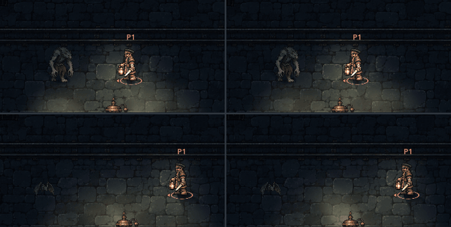
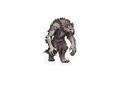
Оборотень
Рывок
- При сближении останавливается у границы столкновения с целью, включая постамент светоча.
- Предупреждение — Убраны линия и кольцо. Подготовку показывает поза.
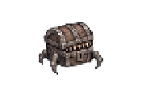
Мимик
- У проглоченного охотника в интерфейсе отображается состояние «Проглочен».
- Спрайт сундука — Корпус закрытого мимика приведён к размеру и цветам обычного сундука.
Захват
Теперь проглатывает охотника и держит на месте. Раньше тащил его за собой.
- Проглоченный охотник исчезает с арены и защищён от внешних ударов. При освобождении возвращаются спрайт, свет от снаряжения и столкновения.
- Раскрытие пасти — Убран круг предупреждения.
- Проглатывание — Движение пасти показывает, что охотник внутри.
- Освобождение — Мимик выплёвывает пленника.

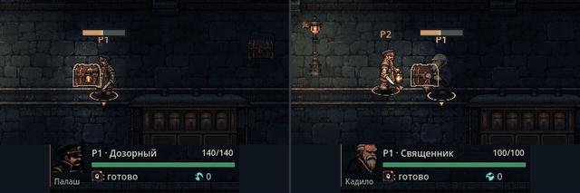
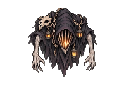
Пожиратель света
- Полоса здоровья босса остаётся видна поверх эффекта разлома.
Высасывание света
- Пульсация светоча предупреждает об атаке.
- Пульсация сменяется потоком света к разлому. После попадания светоч тускнеет до нового уровня за 1,28 с.
- Если атаки охотников прерывают заряд в последний момент, светоч не получает урон. Начавшая перетекать вуаль рассеивается.
- Поднятие рук — Босс полностью поднимает руки до появления дыма.
- Разлом — Три дымных сгустка сходятся между поднятыми руками.
- Поток света — Вуаль уплотняется к моменту удара, доходит до входа и гаснет внутри разлома.
- Затемнение — Во время поглощения тень вокруг босса расширяется.
- Закрытие разлома — Края смыкаются после того, как разлом поглощает плотную волну света.
- Сбитие заряда — Тени и вуаль рассеиваются с той фазы, в которой прервали заряд.

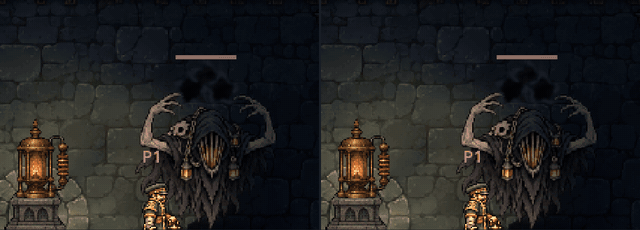

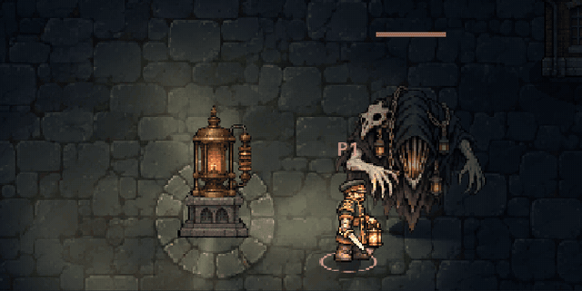
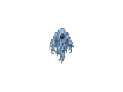
Дух из темноты
- Новый противник.
- В интерфейсе отображается состояние «Схвачен духом». Захват видят и клиенты LAN.
- Новая механика — Дух может устроить засаду во время боя вдали от светоча.
Засада
- Вне света — дальше 330 пикс
- Первая проверка — после 5 с
- Шанс — 25%
- Рывок с пленником — до 108 пикс
- Защита после побега — 120 с
- Появляется только во время боя. Повторная проверка шанса — через 2,5 с.
- Предупреждение — 0,6 с до захвата.
- Унос пленника — 64 пикс/с. Дух держит охотника без прямого урона.
- Освобождение — Заново удерживать взаимодействие 2 с.
- Защита действует на вырвавшегося охотника. Пауза останавливает отсчёт.
- После защиты нужно снова провести в темноте 5 с.
- Появление в темноте — Добавлена отдельная фаза появления.
- Захват — Добавлена отдельная фаза захвата.
- Унос пленника — Добавлена отдельная фаза перемещения.
- Уход духа — Добавлена анимация ухода при освобождении пленника.

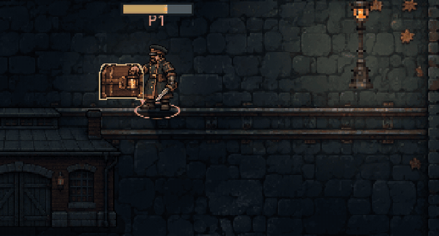

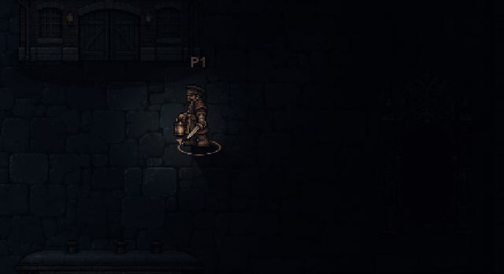